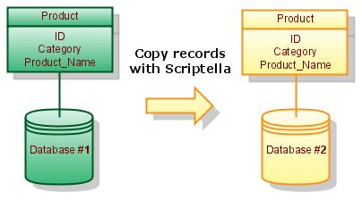
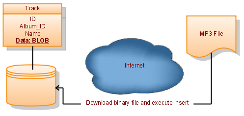

Scriptella ETL tutorial
Installation
Scriptella requires Java 17 or newer. Check your Java version with java -version, then install Scriptella on macOS or Linux:
curl -fsSL https://scriptella.org/install.sh | shFollow the installer's instructions for adding Scriptella to your PATH. Start a new shell or reload the updated startup file, then verify the installation:
scriptella.sh --versionFor Windows, follow the Windows installation instructions. For other manual installations, see the installation guide.
The example below needs no JDBC driver. For database examples, put the required JDBC driver JARs in ${HOME}/.local/scriptella/lib (or your installation's lib directory), or set the classpath attribute on a connection.
Command-Line Execution
Run scriptella.sh to execute etl.xml in the current directory, or pass an ETL filename as shown below.
On Windows, use scriptella.bat instead of scriptella.sh in the commands below. For example: scriptella.bat csv-to-sql.etl.xml.
A first runnable example needs no database. Create people.csv in a working directory of your choice:
id,name
1,Ada
2,GraceThen create csv-to-sql.etl.xml in the same directory:
<!DOCTYPE etl SYSTEM "http://scriptella.org/dtd/etl.dtd">
<etl>
<connection id="input" driver="csv" url="people.csv"/>
<connection id="output" driver="text" url="load.sql"/>
<query connection-id="input">
<script connection-id="output">
INSERT INTO people (id, name) VALUES ($id, '$name');
</script>
</query>
</etl>The CSV query produces one row per data line. The nested script runs once per row, and connection-id selects the destination. $id and $name expand as text. When the destination is JDBC, use ?id and ?name parameters instead.
scriptella.sh csv-to-sql.etl.xmlExecuting ETL Files from Java
It is extremely easy to run Scriptella ETL files from java code. Just make sure scriptella.jar is on classpath and use any of the following methods to execute an ETL file:
EtlExecutor.newExecutor(new File("etl.xml")).execute();
EtlExecutor.newExecutor(getClass().getResource("etl.xml")).execute();
EtlExecutor.newExecutor(
servletContext.getResource("/WEB-INF/db/init.etl.xml")).execute();See EtlExecutor Javadoc for more details on how to execute ETL files from Java code.
Examples
For a quick start type scriptella.sh -t to create a template etl.xml file.
Copy table to another database

Assume Database #1 contains Table Product with id, category and name columns. The following script copies software products from this table to Database #2. Additionally Name column is changed to Product_Name.
etl.xml:
<etl>
<connection id="db1" url="jdbc:database1:sample" user="sa" password="" classpath="external.jar"/>
<connection id="db2" url="jdbc:database2:sample" user="sa" password=""/>
<query connection-id="db1">
SELECT * FROM Product WHERE category='software';
<script connection-id="db2">
INSERT INTO Product(id, category, product_name) values (?id, ?{category}, ?name);
</script>
</query>
</etl>Working with BLOBs

The following sample initializes table of music tracks. Each track has a DATA field containing a file loaded from an external location. File song1.mp3 is stored in the same directory as etl.xml and song2.mp3 is loaded through the web.
etl.xml:
<etl>
<connection driver="h2" url="jdbc:h2:./tracks" user="sa" password="" classpath="h2.jar"/>
<script>
CREATE TABLE Track (
ID INT,
ALBUM_ID INT,
NAME VARCHAR(100),
DATA LONGVARBINARY
);
INSERT INTO Track(id, album_id, name, data) values
(1, 1, 'Song1.mp3', ?{file 'song1.mp3'});
INSERT INTO Track(id, album_id, name, data) values
(2, 2, 'Song2.mp3', ?{file 'http://musicstoresample.com/song2.mp3'});
</script>
</etl>Supporting several SQL dialects
<dialect> element allows including vendor specific content. The following example creates a database schema for H2, Oracle, or MySQL depending on the selected driver:
<etl>
<properties>
<include href="etl.properties"/>
</properties>
<connection url="$url" user="$user"
password="$password" classpath="$classpath"/>
<script>
<dialect name="h2">
<include href="h2-schema.sql"/>
</dialect>
<dialect name="oracle">
<include href="oracle-schema.sql"/>
</dialect>
<dialect name="mysql">
<include href="mysql-schema.sql"/>
</dialect>
INSERT INTO Product(id, category, product_name)
VALUES (1, 'ETL', 'Scriptella ETL');
INSERT INTO Product(id, category, product_name)
VALUES (2, 'Development', 'Java SE 6');
</script>
</etl>Use Scriptella as Ant Task
In order to use Scriptella as Ant task you will need the following taskdef declaration:
<taskdef resource="antscriptella.properties" classpath="/path/to/scriptella.jar[;additional_drivers.jar]"/>Running Scriptella files from Ant is simple:
<etl/> <!-- Execute etl.xml file in the current directory -->or
<etl file="path/to/your/file"/> <!-- Execute ETL file from specified location -->Next steps: Follow the MySQL-to-PostgreSQL migration guide for a complete database-copy example with setup and verification, create and initialize a database, or initialize a database on application startup.